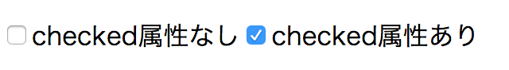

Todoアイテムの更新と削除を実装する
このセクションではTodoアプリの残りの機能である「Todoアイテムの更新」と「Todoアイテムの削除」を実装していきます。
「Todoアイテムの更新」とは、チェックボックスをクリックして未完了だったらチェックをつけて完了済みに、逆に完了済みのアイテムを未完了へとトグルする機能のことです。完了状態をTodoアイテムごとに持ち、それぞれのTodoの進捗を管理できる機能です。
一方の「Todoアイテムの削除」はボタンをクリックしたらTodoアイテムを削除する機能です。 不要となったTodoを削除して完了済みのTodoを取り除くなどに利用できる機能です。
まずは「Todoアイテムの更新」から実装します。その後「Todoアイテムの削除」を実装していきます。
Todoアイテムの更新
現時点ではTodoアイテムが完了済みかどうかの状態が表示されていません。
そのため、まずはTodoアイテムが完了済みかを表示する必要があります。
HTMLの<input type="checkbox">要素を使ってチェックボックスを表示し、Todoアイテムごとの完了状態を表現します。
<input type="checkbox">はchecked属性がない場合はチェックが外れた状態のチェックボックスとなります。
一方<input type="checkbox" checked>のようにchecked属性がある場合はチェックがついたチェックボックスとなります。

src/App.jsにてTodoListModelのonChangeメソッドで登録したリスナー関数内を書き換え、チェックボックスを表示しています。
Todoアイテム要素である<li>要素中に次のように<input>要素を追加してチェックボックスを表示に追加します。
チェックボックスである<input>要素にはスタイルのためにclass属性をcheckboxとします。
合わせて完了済みの場合は<s>要素を使って打ち消し線を表示しています。
src/App.jsから抜粋
this.#todoListModel.onChange(() => {
const todoListElement = element`<ul />`;
const todoItems = this.#todoListModel.getTodoItems();
todoItems.forEach(item => {
// 完了済みならchecked属性をつけ、未完了ならchecked属性を外す
// input要素にはcheckboxクラスをつける
const todoItemElement = item.completed
? element`<li><input type="checkbox" class="checkbox" checked><s>${item.title}</s></li>`
: element`<li><input type="checkbox" class="checkbox">${item.title}</li>`;
todoListElement.appendChild(todoItemElement);
});
render(todoListElement, containerElement);
todoItemCountElement.textContent = `Todoアイテム数: ${this.#todoListModel.getTotalCount()}`;
});
<input type="checkbox">要素はクリックするとチェックの表示がトグルします。
しかし、モデルであるTodoItemModelのcompletedプロパティの状態は自動では切り替わりません。
これにより表示とモデルの状態が異なってしまうという問題が発生します。
この問題は次のような操作をしてみると確認できます。
- Todoアイテムを追加する
- Todoアイテムのチェックボックスにチェックをつける
- 別の新しいTodoアイテムを追加する
- すべてのチェックボックスのチェックがリセットされてしまう
この問題を避けるためにも、<input type="checkbox">要素がチェックされたらモデルの状態を更新する必要があります。
<input type="checkbox">要素はチェックされたときにchangeイベントをディスパッチします。
このchangeイベントをリッスンして、TodoItemモデルの状態を更新すればモデルと表示の状態を同期できます。
input要素からディスパッチされるchangeイベントをリッスンする処理は次のように書けます。
まずはtodoItemElement要素の下にあるinput要素をquerySelectorメソッドで探索します。
以前はdocument.querySelectorでdocument以下からCSSセレクタにマッチする要素を探索していました。
todoItemElement.querySelectorメソッドを使うことで、todoItemElement下にある要素だけを対象に探索できます。
そして、見つけたinput要素に対してaddEventListenerメソッドでchangeイベントが発生したときに呼ばれるコールバック関数を登録できます。
const todoItemElement = element`<li><input type="checkbox" class="checkbox">${item.title}</li>`;
// クラス名checkboxを持つ要素を取得
const inputCheckboxElement = todoItemElement.querySelector(".checkbox");
// `<input type="checkbox">`のチェックが変更されたときに呼ばれるイベントリスナーを登録
inputCheckboxElement.addEventListener("change", () => {
// チェックボックスの表示が変わったタイミングで呼び出される処理
// TODO: ここでモデルを更新する処理を呼ぶ
});
ここまでをまとめると、Todoアイテムの更新は次の2つのステップで実装できます。
TodoListModelに指定したTodoアイテムの更新処理を追加する- チェックボックスの
changeイベントが発生したら、モデルの状態を更新する
ここから実際にTodoアイテムの更新をtodoappプロジェクトに実装していきます。
TodoListModelに指定したTodoアイテムの更新処理を追加する
まずは、TodoListModelに指定したTodoアイテムを更新するupdateTodoメソッドを追加します。
TodoListModelのupdateTodoメソッドは、指定したidと一致するTodoアイテムの完了状態（completedプロパティ）を更新します。
src/model/TodoListModel.jsの変更点を抜粋
// ===============================
// TodoListModel.jsの既存の実装は省略
// ===============================
/**
* 指定したidのTodoItemのcompletedを更新する
* @param {{ id:number, completed: boolean }}
*/
updateTodo({ id, completed }) {
// `id`が一致するTodoItemを見つけ、あるなら完了状態の値を更新する
const todoItem = this.#items.find(todo => todo.id === id);
if (!todoItem) {
return;
}
todoItem.completed = completed;
this.emitChange();
}
}
チェックボックスのchangeイベントが発生したら、Todoアイテムの完了状態を更新する
次にinput要素のchangeイベントのリスナー関数で、Todoアイテムの完了状態を更新します。
src/App.jsにて、TodoListModelのonChangeメソッドで登録したリスナー関数内を次のように書き換えます。
App.jsでtodoItemElementの子要素としてcheckboxというクラス名をつけたinput要素を追加します。
このinput要素のchangeイベントが発生したら、TodoListModelのupdateTodoメソッドを呼び出すようにします。
チェックがトグルするたびに呼び出されるので、completedには現在の状態を反転（トグル）した値を渡します。
src/App.jsから変更点を抜粋
this.#todoListModel.onChange(() => {
const todoListElement = element`<ul />`;
const todoItems = this.#todoListModel.getTodoItems();
todoItems.forEach(item => {
// 完了済みならchecked属性をつけ、未完了ならchecked属性を外す
const todoItemElement = item.completed
? element`<li><input type="checkbox" class="checkbox" checked><s>${item.title}</s></li>`
: element`<li><input type="checkbox" class="checkbox">${item.title}</li>`;
// チェックボックスがトグルしたときのイベントにリスナー関数を登録
const inputCheckboxElement = todoItemElement.querySelector(".checkbox");
inputCheckboxElement.addEventListener("change", () => {
// 指定したTodoアイテムの完了状態を反転させる
this.#todoListModel.updateTodo({
id: item.id,
completed: !item.completed
});
});
todoListElement.appendChild(todoItemElement);
});
render(todoListElement, containerElement);
todoItemCountElement.textContent = `Todoアイテム数: ${this.#todoListModel.getTotalCount()}`;
});
TodoListModelのupdateTodoメソッド内ではemitChangeメソッドによって、TodoListModelの変更が通知されます。
これによってTodoListModelのonChangeで登録したイベントリスナーが呼び出され、表示が更新されます。
これで表示とモデルが同期でき「Todoアイテムの更新処理」が実装できました。
削除機能
次は「Todoアイテムの削除機能」を実装していきます。
基本的な流れは「Todoアイテムの更新機能」と同じです。
TodoListModelにTodoアイテムを削除する処理を追加します。
そして表示には削除ボタンを追加し、削除ボタンがクリックされたときに指定したTodoアイテムを削除する処理を呼び出します。
TodoListModelに指定したTodoアイテムを削除する処理を追加する
まずは、TodoListModelに指定したTodoアイテムを削除するdeleteTodoメソッドを追加します。
TodoListModelのdeleteTodoメソッドは、指定したidと一致するTodoアイテムを削除します。
itemsというTodoアイテムの配列から指定したidと一致するTodoアイテムを取り除くことで削除しています。
src/model/TodoListModel.jsの変更点を抜粋
// ===============================
// TodoListModel.jsの既存の実装は省略
// ===============================
/**
* 指定したidのTodoItemを削除する
* @param {{ id: number }}
*/
deleteTodo({ id }) {
// `id`に一致しないTodoItemだけを残すことで、`id`に一致するTodoItemを削除する
this.#items = this.#items.filter(todo => {
return todo.id !== id;
});
this.emitChange();
}
}
削除ボタンのclickイベントが発生したら、Todoアイテムを削除する
次にbutton要素のclickイベントのリスナー関数でTodoアイテムを削除する処理を呼び出す処理を実装します。
src/App.jsにて、TodoListModelのonChangeメソッドで登録したリスナー関数内を次のように書き換えます。
todoItemElementの子要素としてdeleteというクラス名をつけたbutton要素を追加します。
この要素がクリック（click）されたときに呼び出されるイベントリスナーをaddEventListenerメソッドで登録します。
このイベントリスナーの中でTodoListModelのdeleteTodoメソッドを呼び、指定したidのTodoアイテムを削除します。
src/App.jsから変更点を抜粋
this.#todoListModel.onChange(() => {
const todoListElement = element`<ul />`;
const todoItems = this.#todoListModel.getTodoItems();
todoItems.forEach(item => {
// 削除ボタン(x)をそれぞれ追加する
const todoItemElement = item.completed
? element`<li><input type="checkbox" class="checkbox" checked>
<s>${item.title}</s>
<button class="delete">x</button>
</li>`
: element`<li><input type="checkbox" class="checkbox">
${item.title}
<button class="delete">x</button>
</li>`;
// チェックボックスのトグル処理は変更なし
const inputCheckboxElement = todoItemElement.querySelector(".checkbox");
inputCheckboxElement.addEventListener("change", () => {
this.#todoListModel.updateTodo({
id: item.id,
completed: !item.completed
});
});
// 削除ボタン(x)がクリックされたときにTodoListModelからアイテムを削除する
const deleteButtonElement = todoItemElement.querySelector(".delete");
deleteButtonElement.addEventListener("click", () => {
this.#todoListModel.deleteTodo({
id: item.id
});
});
todoListElement.appendChild(todoItemElement);
});
render(todoListElement, containerElement);
todoItemCountElement.textContent = `Todoアイテム数: ${this.#todoListModel.getTotalCount()}`;
});
TodoListModelのdeleteTodoメソッド内ではemitChangeメソッドによって、TodoListModelの変更が通知されます。
これにより表示がTodoListModelと同期するように更新され、表示からもTodoアイテムが削除できます。
これで「Todoアイテムの削除機能」が実装できました。
このセクションのチェックリスト
- Todoアイテムの完了状態として
<input type="checkbox">を表示に追加した - チェックボックスが更新されたときの
changeイベントのリスナー関数でTodoアイテムを更新した - Todoアイテムを削除するボタンとして
<button class="delete">x</button>を表示に追加した - 削除ボタンの
clickイベントのリスナー関数でTodoアイテムを削除した - Todoアイテムの追加、更新、削除の機能が動作するのを確認した
このセクションでTodoアプリに必要な要件が実装できました。
- Todoアイテムを追加できる
- Todoアイテムの完了状態を更新できる
- Todoアイテムを削除できる
ここまでのTodoアプリは次のURLで確認できます。
最後のセクションでは、App.jsのリファクタリングを行って継続的に開発できるアプリの作り方について見ていきます。